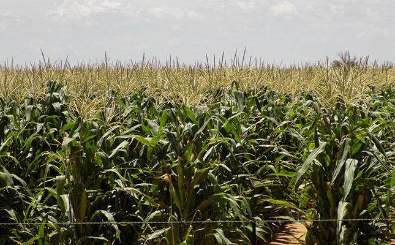
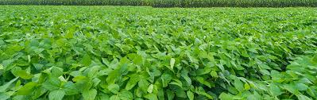
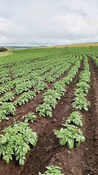
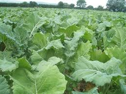
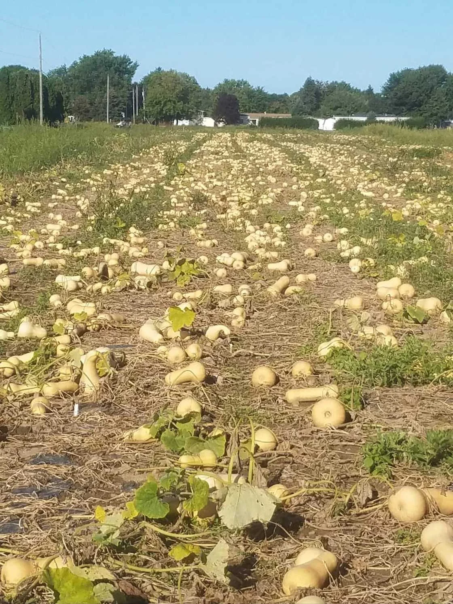

In this section, Strain provides fresh the farm products.
Strain Agro-activities include Horticultural and Commercial Farming activities. The crops are grown on Glen Brook Farm in Nyabira.
Horticultural crops planted are tomatoes, onions, green veggies, butter nuts and paprika. The Commercial crops regularly planted include Maize, Soya beans, Sweet Potatoes, Sorghum and Potatoes.
Commercial Crops

Maize
This figure illustrates commercial maize that has been planted

Soya Beans
Figure illustrates Soyabeans that has planted

Potatoes
Figure shows potatoes that have been planted
Sweet Potato
Figure shows harvest for sweet potatoes
Horticulture Crops

Kale Vegetable
This figure illustrates kale vegetables that have been planted

Butternuts
Figure illustrates butternuts that have been planted